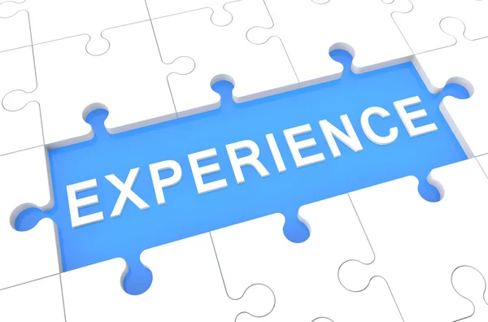

Study Choice
Het motief achter mijn studiekeuze

klik voor samenvatting
Een Studiekeuze verloopt niet altijd eenvoudig. sommigen weten als snel wat ze willen studeren, waar
andere langer nodig hebben om de juiste keuze te vinden. In deze blog vertel ik over de motivatie
van
mijn studiekeuze.
lees meer
SWOT-analyse
Personal SWOT-analyse

klik voor samenvatting
welke sterkte zwaktes en bedreigingen?
lees meer
Programming expierence
ervaring programmeren

klik voor samenvatting
wat is mijn ervaring met programmeren?
lees meer
first feedback
ontvangen feedback
klik voor samenvatting
welke feedback heb ik ontvangen
lees meer
ict field of work
ict werkveld
klik voor samenvatting
mijn onderzoek naar een specifiek ict beroep/branch
lees meer